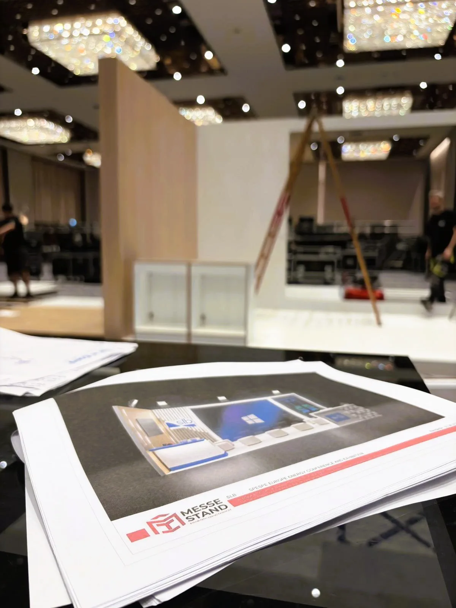

First-Time Exhibitor Guide: Checklist, Mistakes & Preparation Timeline
Everything a first-time exhibitor needs — 6-month preparation timeline, 40-point checklist, 10 common mistakes, and how to choose an exhibition stand builder that delivers on time.

Exhibiting at a trade show for the first time is one of the most concentrated business investments you will make. In 3 to 5 days, you meet more qualified buyers than a year of cold outreach. But the learning curve is steep — and the costs of getting it wrong are real.
AUMA, the Association of the German Trade Fair Industry, reports that over 180 international trade fairs take place in Germany alone each year, with exhibitor spending exceeding EUR 1.5 billion annually on stand construction and services (AUMA 2026). Across Europe, the Middle East, and Asia, the trade show market continues to grow, with first-time exhibitors making up 20-30% of participants at major events.
We built a 36 m² stand for a Turkish textile manufacturer at their first Heimtextil in Frankfurt. They arrived without a lead capture system, no staff briefing, and no appointment schedule. By day three, they had collected 11 business cards and zero qualified leads. The same client, with proper preparation, returned six months later for Techtextil and booked 47 meetings before the show even opened. Preparation is the difference between a EUR 45,000 expense and a EUR 45,000 investment.
This guide is built from 15 years of exhibition stand construction across three continents. It covers the full timeline from show selection to post-event follow-up, the specific mistakes we see first-time exhibitors repeat, and a practical checklist you can start using today — regardless of which fair you are targeting or which stand builder you work with.
Table of Contents
- Why Your First Trade Show Is Different
- 6-Month Preparation Timeline
- First-Time Exhibitor Checklist — 40 Points
- 10 Mistakes First-Time Exhibitors Make
- How to Choose the Right Exhibition Stand
- Working with an Exhibition Stand Builder
- Budget Breakdown for a First Show
- What to Expect on Show Days
- After the Show — Follow-Up That Converts
- Frequently Asked Questions
Why Your First Trade Show Is Different
A trade show is not a larger version of a sales meeting. It is a compressed, high-intensity environment where you manage space design, logistics, staff performance, lead capture, and brand perception — all simultaneously, in a venue you do not control, under rules you did not write.
First-time exhibitors face challenges that repeat exhibitors have already solved: understanding the exhibitor manual (often 80-120 pages of technical regulations), navigating union rules at venues like Messe Frankfurt or DWTC, budgeting for hidden costs that do not appear in the initial space contract, and building a stand that attracts visitors in a hall with 500+ competitors.
The exhibitor manual is your single most important document. It contains everything: stand construction deadlines, permitted materials, ceiling height limits, suspension point load capacities, electrical regulations, fire certification requirements, waste disposal rules, and penalty clauses. Exhibitors who read it 4 weeks before the fair avoid the mistakes that cost others EUR 2,000-8,000 in on-site corrections.
Your stand builder should know the manual for your specific venue. If they have never built at Messe Düsseldorf, they will not know about the Brandwache requirement. If they have never worked at Dubai World Trade Centre, they will underestimate the visa and customs timeline. Venue-specific experience is not a nice-to-have — it directly affects your budget and schedule.
6-Month Preparation Timeline
A structured timeline removes guesswork. Each phase has a clear deliverable. Start late, and you pay in rush fees, limited stand builder availability, and avoidable mistakes.
Fuara 6 Ay Kala: Fuar Seçimi ve Bütçe Onayı
Sektörünüzdeki her büyük ticari fuar işletmeniz için uygun değildir. Her etkinliği dört kritere göre değerlendirin: ziyaretçi profili eşleşmesi (katılımcılar gerçek alıcılarınız mı?), coğrafi alaka (fuar hedef pazarınıza hizmet ediyor mu?), katılımcı listesi kalitesi (başka kimler sergiliyor — rakipler mi yoksa tamamlayıcı markalar mı?) ve ulaşma maliyeti oranı (toplam bütçenin standınızdaki tahmini nitelikli ziyaretçi sayısına bölünmesi).
Organizatörden önceki yılın katılımcı listesini ve fuar sonrası raporunu isteyin. İkisini de sağlayamıyorlarsa, bunu bir tehlike işareti (red flag) olarak değerlendirin. Bu aşamada birincil hedefinizi de belirleyin: potansiyel müşteri yaratma, distribütör arayışı, ürün lansmanı, marka görünürlüğü veya pazar araştırması. Bunu yazın. Ekibinizle paylaşın. Bu hedef, sonraki her kararı belirler.
Fuara 5 Ay Kala: Stand Üreticisi Seçimi ve İlk Tasarım
Hedef fuar alanınızda deneyimi olan 3 fuar standı üreticisiyle iletişime geçin. Onlara kat planınızı (stand konumu, boyutları, açık cepheleri), hedefinizi ve hedef ziyaretçi profilinizi, kabaca bir bütçe aralığını ve marka yönergelerini sağlayın. Her birinden kalem kalem ayrılmış bir teklif isteyin — tek bir rakam değil. Doğru bir teklif; tasarım, üretim, grafikler, mobilya, AV ekipman, lojistik, kurulum ve söküm işlemlerini ayrı ayrı dökümler.
Sadece toplam fiyatı değil, nelerin dahil olduğunu da karşılaştırın. Bir üreticinin 18.000 EUR'luk teklifi mobilya ve AV kiralama işlemlerini hariç tutarken; diğerinin 22.000 EUR'luk teklifi her şeyi ve ek olarak sahada proje yönetimini kapsayabilir. Açıkça sorun: "Bu teklife dahil olmayan ve ayrıca ödemem gereken neler var?".
Fuara 4 Ay Kala: Stand Tasarımının Kesinleşmesi ve Üretimin Başlaması
3D tasarımı kesinleştirin. Görüş açılarını gözden geçirin — ziyaretçiler hangi yönden yaklaşacak? Ana mesajınız ve ürün sergilemeniz 15 metre uzaktan görünür olmalıdır. Şunları onaylayın: banko pozisyonları, depolama alanı (gözden uzak en az 3-4 m²), elektrik prizi konumları, aydınlatma planı ve zemin kaplaması. Grafikleri ve basılı materyalleri sipariş edin. Üreticinin atölyesinde üretime başlayın.
Fuara 3 Ay Kala: Pazarlama ve Ziyaretçi Erişimi
İlk kez katılanların çoğu, ziyaretçilerin fuar alanında kendilerini bulacağını varsayar. Dikkat çekmek için yarışan 500 başka stand varken, bulamayacaklardır. Erişime hemen başlayın: mevcut kişilerinize stand numaranızı ve ziyaret etmeleri için bir neden (yeni ürün, canlı demo, özel toplantı slotları) içeren bir e-posta gönderin. LinkedIn ve sektör forumlarında paylaşım yapın. Organizatör bir ziyaretçi davet aracı sunuyorsa, onu kullanın. Stand numaranızın, konum haritanızın ve toplantı rezervasyon bağlantınızın olduğu basit bir açılış sayfası kurun.
Promosyon malzemelerini sipariş edin: broşürler, ürün numuneleri, eşantiyonlar. İhtiyacınız olduğunu düşündüğünüzden 3 kat daha fazla kartvizit bastırın. 4 personelin bulunduğu 3 günlük bir fuar, 500'den fazla kartviziti kolayca tüketebilir.
Fuara 2 Ay Kala: Lojistik Planlama ve Personel Seçimi
Uçuşları, otelleri ve navlun nakliyesini rezerve edin. Uluslararası sergileme yapıyorsanız gümrük belgelerini onaylayın — bazı ülkeler fuar malzemelerinin geçici ithalatı için bir ATA Karnesi gerektirir. Stand personelinizi seçin. Yabancılarla sohbete başlayabilen, potansiyel müşterileri hızlıca nitelendirebilen ve 8+ saat boyunca enerjik kalabilen kişileri seçin. Onları şu konularda eğitin: ana mesajlarınız (maksimum 3 cümle), nitelendirme soruları, potansiyel müşteri yakalama süreci ve aynı anda birden fazla ziyaretçi geldiğinde ne yapılması gerektiği.
Fuara 1 Ay Kala: Son Kontroller ve Personel Bilgilendirmesi
Tüm gönderilerin ulaştığını veya takipli olarak yolda olduğunu onaylayın. Personelinize tek sayfalık basılı bir belge ile bilgi verin: stand konumu, fuar saatleri, kıyafet yönetmeliği, konuşma noktaları, potansiyel müşteri nitelendirme kriterleri ve acil durum kişileri. Herkesin malzemelerin nerede depolandığını bilmesi için stand düzenini dolaşın. Üreticinin kurulum programını onaylayın — salona hangi gün ve saatte erişebilecekleri, standın sizin denetiminiz için ne zaman hazır olacağı ve sahadaki irtibat kişinizin kim olduğu.
Fuara 1 Hafta Kala: Toparlanın, Onaylayın, Dinlenin
Stand acil durum kitinizi sevk edilen malzemelerden ayrı olarak paketleyin: potansiyel müşteri yakalama cihazı (şarj edilmiş), şarj cihazları ve taşınabilir bataryalar, temel aletler, ilk yardım kiti, leke çıkarıcı, nefes tazeleyici naneli şeker, rahat ayakkabılar. Katılımcı el kitabının acil durum iletişim sayfasını yazdırın. Stand üreticisinin varış saatini onaylayın. İyi bir gece uykusu çekin — taşınma günü erken başlar ve durmaz.
First-Time Exhibitor Checklist — 40 Points
Fuar Öncesi (20 Madde)
Ölçülebilir bir hedef belirleyin: nitelikli potansiyel müşteri sayısı, toplantılar veya dağıtılacak numuneler
Katılımcı el kitabının tamamını okuyun: tüm 80-120 sayfayı, özellikle teknik yönetmelikler bölümünü
Stand boyutlarını, salon konumunu, açık cepheleri ve komşu katılımcıları onaylayın
Mekana özel deneyimi olan fuar standı üreticisi seçin: kalem kalem ayrılmış 3 teklif isteyin
3D stand tasarımını kesinleştirin: tüm yaklaşma yönlerinden görüş açılarını kontrol edin
Tüm malzemelerin mekanın yangın sertifikası gerekliliklerini (B1 / EN 13501-1 eşdeğeri) karşıladığını onaylayın
Grafikleri, afişleri ve basılı malzemeleri sipariş edin: üretim için 3 hafta süre tanıyın
Kartvizitleri tasarlayın ve bastırın: tahmini ihtiyacınızın 3 katı kadar
Basit bir açılış sayfası oluşturun: stand numarası, harita ve toplantı rezervasyon bağlantısı içeren
Fuar öncesi e-postalar gönderin: mevcut kişilere ve potansiyel müşterilere stand numarasını ve ziyaret etmek için bir neden ekleyerek ulaşın
Potansiyel müşteri toplama sistemi kurun: uygulama tabanlı veya nitelendirme alanları olan yapılandırılmış kağıt formlar
Promosyon ürünleri ve ürün numuneleri sipariş edin: mekana veya üreticinin deposuna teslimatı onaylayın
Personel seyahatini rezerve edin: uçuşlar, mekana 20 dakika mesafede otel, yerel ulaşım
Gümrük belgelerini hazırlayın: uluslararası katılıyorsanız ATA Karnesi veya ilgili evraklar
Takipli navlun nakliyesini ayarlayın: mekanla teslimat aralığını onaylayın
Stand personelini bilgilendirin: ana mesajlar, nitelendirme soruları, potansiyel müşteri toplama ve kıyafet yönetmeliği konusunda
Tek sayfalık basılı belge hazırlayın: her personel için stand konumu, fuar saatleri ve acil durum kişilerini içeren
Kurulum takvimini onaylayın: stand üreticisi ile tarih, saat, sahadaki irtibat kişisinin adı ve telefonu
Stand acil durum kitini ayrı olarak paketleyin: sevk edilen malzemelere koymayın
Mekan ile siparişleri onaylayın: elektrik, su, internet ve temizlik
Fuar Sırasında (12 Madde)
Açılıştan 60 dakika önce varın: standı inceleyin, malzemeleri yenileyin, ekibi bilgilendirin
Salonu dolaşın: ziyaretçiler gelmeden önce rakip standları ve trafiğin yoğun olduğu alanları not edin
Standı temiz tutun: boş bardakları kaldırın, broşürleri düzeltin, yüzeyleri her 2 saatte bir silin
Bir potansiyel müşteri toplayıcı atayın: tüm personel asla aynı anda sohbete dalmamalıdır
Ziyaretçileri 3 soruyla nitelendirin: karar verme yetkisi, zaman çizelgesi, spesifik ihtiyaç
Müşteri adayı detaylarını anında kaydedin: 5 sohbetten sonra hafıza silikleşir
Standın fotoğraflarını çekin: fuar sonrası raporlama için yoğun saatlerde
Rakip materyallerini toplayın: broşürleri ve fiyatlandırmaları edinin — rekabetçi istihbarat ROI'nin bir parçasıdır
Standda kalın: oturmayın, telefonunuzu kullanmayın, bankoda yemek yemeyin
Personeli her 3-4 saatte bir değiştirin: enerji seviyelerini korumak için
Mesai saatleri dışında ağ kurun: akşam etkinlikleri fuar alanı kadar çok potansiyel müşteri üretir
Söküm programını ve navlun alımını onaylayın: stand üreticisi ile teyit edin
Fuar Sonrası (8 Madde)
5 iş günü içinde kişiselleştirilmiş takip e-postaları gönderin: şablona değil, yaptığınız sohbete atıfta bulunun
Müşteri adaylarını kategorize edin: sıcak (satın almaya hazır, 48 saat içinde takip et), ılık (ilgileniyor, 2 hafta sonra takip et), soğuk (bülten listesinde tut)
Talepleri 1 hafta içinde gönderin: istenen teklifleri, numuneleri veya broşürleri iletin
Ekiple değerlendirme toplantısı yapın: ne işe yaradı, ne yaramadı, bir dahaki sefere ne değiştirilmeli
ROI hesaplayın: toplam maliyet ÷ nitelikli müşteri adayı = müşteri adayı başına maliyet; diğer pazarlama kanallarıyla karşılaştırın
CRM sistemini güncelleyin: tüm potansiyel müşteri verileri ve iletişim geçmişiyle
Fuar özeti yayınlayın: LinkedIn'de ve web sitenizde etkinliği ve kilit kişileri etiketleyerek paylaşın
4 hafta içinde karar verin: bu etkinlikte tekrar yer alacak mısınız? Evetse erken kayıt (early-bird) alanını rezerve edin
10 Mistakes First-Time Exhibitors Make
1. Standı rezerve etmeden önce ölçülebilir bir hedef olmaması
Hedefiniz olmadan fuarın işe yarayıp yaramadığını değerlendiremezsiniz. "Marka bilinirliği" ölçülebilir değildir. "40 nitelikli potansiyel müşteri ve 15 distribütör toplantısı" ise ölçülebilirdir. Alan sözleşmesini imzalamadan önce hedefinizi yazın.
2. En ucuz stand üreticisini seçmek
En düşük teklif genellikle kurulum, mobilya, elektrik işleri veya yerinde desteği kapsamaz. Bu maliyetler fuardan 2 hafta önce ortaya çıktığında, ya ödersiniz ya da eksik bir standla karşılaşırsınız. Sadece dip toplama değil, kalem kalem ayrılmış tekliflere bakın.
3. Katılımcı el kitabını okumamak
Her mekanın benzersiz kuralları vardır. Messe Frankfurt'ta 2,5 metrelik yükseklik eşiği yapısal onayı tetikler. DWTC'de sendikalı işçi kuralları kendi ekibinizin neye dokunabileceğini sınırlar. El kitabı her teknik soruyu yanıtlar — ancak sadece okursanız.
4. Çok geç başlamak
İyi stand üreticileri büyük fuarlar için 4-6 ay önceden rezerve edilir. 8 hafta kala başlamak, müsait olanı seçmek, %20-30 aciliyet primleri ödemek ve tasarım tavizlerini kabul etmek anlamına gelir. Ne kadar erken başlarsanız, o kadar çok pazarlık gücünüz olur.
5. Fuar öncesi pazarlama yapmamak
Ziyaretçiler gelmeden önce salon rotalarını planlarlar. Var olduğunuzu bilmiyorlarsa önünüzden geçip giderler. Fuardan önce en az 2 e-posta gönderin, LinkedIn'de haftalık paylaşım yapın ve organizatörün ziyaretçi davet araçlarını kullanın. Fuar öncesi pazarlama yapan katılımcılar, stand trafiğini %40-60 daha fazla artırır.
6. Potansiyel müşterileri nitelendiremeyen personel
Ofisinizdeki en samimi kişi, stand için doğru kişi olmayabilir. Stand personeli ilk 60 saniye içinde nitelendirici sorular sormalıdır: "Bugün sizi fuara getiren nedir? Tedarikçileri mi değerlendiriyorsunuz? Zaman çizelgeniz nedir?" Hiçbir nitelikli müşteri adayı üretmeyen samimi bir sohbet, boşa harcanmış bir fırsattır.
7. Depolama ve altyapı hizmetlerini unutmak
Gizli depolama alanı olmayan güzel bir stand, saat 11:00 itibarıyla dağınık görünür. Paltolar, çantalar, ekstra broşürler ve kişisel eşyalar için en az 3-4 m² kapalı depolama alanı planlayın. Elektrik prizlerini, internet hızını ve su bağlantılarını üretici üretime başlamadan önce onaylayın — sonradan eklemek maliyet artırır.
8. Standı metne boğmak
Standınızın önünden geçen ziyaretçilerin ne sunduğunuzu anlamak için 2-3 saniyesi vardır. Duvarlarınız paragraflarla kaplıysa hiçbirini okumazlar. Bir ana mesaj, bir ürün öne çıkan görseli, bir eyleme çağrı mesajı belirleyin. Detayları sohbete saklayın.
9. Potansiyel müşteri yakalama sistemi olmaması
Cam bir fanusa kartvizit atmak bir sistem değildir. Şu alanlara sahip bir potansiyel müşteri yakalama uygulaması veya yapılandırılmış kağıt formu kullanın: isim, şirket, unvan, spesifik ihtiyaç, zaman çizelgesi, bütçe yetkisi ve takip aksiyonu. Standdan ayrılmadan önce her potansiyel müşteriyi A/B/C olarak derecelendirin.
10. Takip etmeyi (follow-up) geciktirmek
5 iş gününden sonra, potansiyel müşterinizin sizi hatırlama oranı %50'den fazla düşer. 2 hafta sonra, fuarda sizinle tanıştığını hiç hatırlamayabilir. İlk takip e-postasını 48 saat içinde gönderin. Sohbetinize ait spesifik bir şeye atıfta bulunun. Sonraki adımı ekleyin — bir arama, bir teklif, bir numune. Standart "tanıştığımıza memnun oldum" e-postaları çöpe gider.
How to Choose the Right Exhibition Stand
Your stand is the physical manifestation of your brand on the show floor. For first-time exhibitors, the choice comes down to three options, each with different trade-offs.
Özel Ahşap Standlar
18 m²'den 800 m²'ye kadar tam özel üretim yapılar. Ahşap ve kompozit yapı; kavisli duvarlar, entegre ürün sergilemeleri ve çok katlı yapılar gibi sınırsız tasarım özgürlüğü sağlar. Maliyet: m² başına 400-800 EUR. Teslim süresi: 8-12 hafta. En uygun olduğu durum: Onaylanmış, yeniden kullanılabilir bir tasarıma sahip olan ve aynı mekanda birden fazla kez sergileme yapan katılımcılar. Özel bir stand depolanabilir, değiştirilebilir ve ilk yatırımı yayarak 3-5 etkinlikte yeniden kullanılabilir.
Modüler Standlar (Maxima Sistemi)
Tam ahşap yapıya kıyasla %30-40 daha düşük maliyetle özel bir görünüm elde eden birinci sınıf alüminyum karkas sistemidir. Paneller, grafikler ve aydınlatma yeniden kullanılabilir bir çerçeveye klipslenir. Maliyet: m² başına 250-500 EUR. Teslim süresi: 6-8 hafta. En uygun olduğu durum: Tam özel tasarım yatırımı yapmadan profesyonel ve markalı bir varlık göstermek isteyen ilk kez katılanlar. Modüler standların sevkiyatı daha hafiftir, kurulumu daha hızlıdır ve gelecekteki etkinliklerde farklı stand boyutları için yeniden yapılandırılabilir.
Paket Standlar (Geliştirme)
Organizatörün standart kabin yapısı ile başlayın ve bunu özel grafikler, yükseltilmiş zemin, daha iyi aydınlatma ve markalı mobilyalarla geliştirin. Maliyet: Standart yapı üzerine geliştirme için 2.000-8.000 EUR. Teslim süresi: 3-4 hafta. En uygun olduğu durum: Sınırlı bir bütçeyle yeni bir pazarı test eden katılımcılar veya standart yapıların zorunlu olduğu salonlarda sergileme yapanlar.
Orta ölçekli Avrupa fuarlarında 20-30 m² alana sahip ilk kez katılanlar için genellikle Maxima modüler sistemini öneririz. Özel bir standın markalı görünümünü toplam fuar yatırımını yönetilebilir kılan bir fiyat noktasında sunar ve yapı bir sonraki etkinlik için yeniden kullanılabilir, yeniden yapılandırılabilir veya genişletilebilir.
For first-time exhibitors at mid-size European fairs with 20-30 m², we typically recommend the Maxima modular system. It delivers the branded look of a custom stand at a price point that keeps the total show investment manageable, and the structure can be reused, reconfigured, or expanded for the next event.
Working with an Exhibition Stand Builder
Your stand builder is your most important vendor for the event. A good one handles design, production, graphics, logistics, installation, on-site support, and dismantling. A bad one costs you money, time, and visitors.
Nelere Dikkat Edilmeli?
Mekana özel deneyim: Üretici hedef mekanınızda en az 3 proje tamamlamış mı? Mekan yönetmelikleri önemli ölçüde farklılık gösterir — İstanbul'da standart olan şey Stuttgart'ta yangın yönetmeliğini ihlal edebilir. Özel fuarınızdan referans isteyin.
Atölye konumu: Fuar alanına yakın bir atölyesi olan üretici, nakliyede %15-25 tasarruf sağlar ve sahadaki sorunlara daha hızlı yanıt verebilir. MT Messe Stand, özellikle Avrupa, Orta Doğu ve BDT pazarlarındaki katılımcılara daha düşük lojistik maliyetleriyle hizmet vermek için İstanbul, Dubai ve Moskova'da atölyeler işletmektedir.
Her şey için tek sözleşme: Üretici tasarım, üretim, lojistik, kurulum ve söküm işlerini tek sözleşmede toplamalıdır. Birden fazla satıcı, birden fazla hata noktası ve bir şeyler ters gittiğinde sorumlu tutulacak tek bir kişi olmaması anlamına gelir.
Saha proje yöneticisi: Kurulum sırasında ve fuarın ilk gününde mekanda bulunan özel bir kişi. Şirket e-posta adresine değil, bir isme ve bir telefon numarasına ihtiyacınız var.
Her Üreticiye Sorulması Gereken Sorular
"Daha önce bu özel mekanda kurulum yaptınız mı? Kaç kez? Fotoğraf görebilir miyim?"
"Bu teklife dahil olmayan ve ayrıca ödemem gereken neler var?"
"Sahadaki irtibat kişim kim ve benim dilimi konuşacak mı?"
"Malzemeler nakliye sırasında gecikir veya hasar görürse yedek planınız nedir?"
"Bir sonraki etkinlikte tekrar kullanmak üzere fuardan sonra standımı depolayabilir misiniz?"
İlk Fuar İçin Bütçe Dağılımı
Paranızın nereye gittiğini anlamak, bütçenizi etkili bir şekilde ayırmanıza ve sürpriz faturalardan kaçınmanıza yardımcı olur. Aşağıdaki aralıklar, orta ölçekli bir Avrupa fuarında 30 m²'lik bir standa dayanmaktadır. Premium mekanlar veya daha büyük alanlar için yukarı doğru ayarlayın.
Maliyet Kalemi Tahmini Aralık (EUR) Toplam içindeki %
Alan kirası 6.000 — 14.000 %30-35
Stand tasarımı ve inşası (her şey dahil) 10.000 — 25.000 %40-50
Lojistik ve nakliye 2.000 — 5.000 %8-12
Personel seyahati ve konaklaması 3.000 — 8.000 %12-16
Toplam (30 m² stand) 21.000 — 52.000 %100
Messe Frankfurt veya DWTC Dubai gibi premium bir mekanda 50-100 m² özel bir stand için toplam bütçe genellikle 50.000 EUR ile 120.000 EUR arasında değişir. Modüler sistemler stand inşası bileşenini %30-40 oranında azaltarak, 30 m²'lik ilk fuar bütçesini 18.000-40.000 EUR'ya yaklaştırır.
Fuar Günlerinde Sizi Neler Bekliyor?
Fuar günleri belli bir ritim izler. Bunu anlamak, enerjinizi, müşteri adaylarınızı ve ekibinizi yönetmenize yardımcı olur.
Sabah (9:00-11:00): İlk iki saat genellikle en yoğun saattir. Ticari alıcılar salonlarda bir planla dolaşırlar. Önce önceden seçilmiş standları ziyaret ederler. Fuardan önce pazarlama yaptıysanız, bunlar sizin randevularınızdır. En iyi personelinizi görevlendirin, stand malzemelerini yenileyin ve potansiyel müşteri toplama sistemini hazır bulundurun.
Öğle (11:00-14:00): Ziyaretçiler öğle yemeği molası verdikçe trafik yavaşlar. Bu, salonu gezmeniz, rekabetçi istihbarat toplamanız ve etrafta kalabalık olmadan konuşmak isteyen ciddi alıcılarla daha uzun sohbetler etmeniz için bir fırsattır.
Öğleden Sonra (14:00-17:00): İkinci bir ziyaretçi dalgası — genellikle planlamayı pek dikkatli yapmayan veya ikinci bir bakış için geri dönenler. Enerjiyi yüksek tutun. Kimsenin 8 saat boyunca ayakta kalmaması için personeli dönüşümlü çalıştırın.
Akşam: Sektör ağ kurma etkinlikleri, organizatör resepsiyonları ve gayri resmi akşam yemekleri fuar alanı kadar çok nitelikli bağlantı üretir. Onlara katılın. Kartvizitlerinizi getirin. Sohbet henüz tazeyken ertesi sabah takibini yapın.
Fuar Sonrası — Dönüşüm Sağlayan Takip (Follow-Up)
Fuar biter. Asıl iş başlar. 2 hafta içinde takip edilmeyen müşteri adaylarının dönüşüm oranı sıfıra yakındır. İşte işe yarayan bir takip dizisi:
1-2. Gün (48 saat): A kalite potansiyel müşterilere kişiselleştirilmiş e-postalar gönderin. Sohbetinize atıfta bulunun. Söz verdiğiniz spesifik belgeyi, teklifi veya numuneyi ekleyin. Gelecek hafta için belirli bir tarih ve saat içeren bir görüşme önerin. Standart şablonlar kullanmayın.
3-5. Gün: B kalite potansiyel müşterilere özel e-postalar gönderin. LinkedIn'de bağlantı kurun. Onay verdilerse onları bülteninize ekleyin. B kalite potansiyel müşteriler genellikle 3-6 ay içinde dönüşür — onları çöpe atmayın.
5-7. Gün: C kalite potansiyel müşterileri pazarlama listenize gönderin. Bunlar boşa giden bağlantılar değildir — artık markanızı tanıyan gelecekteki potansiyel müşterilerdir.
2. Hafta: Yanıt vermeyen A kalite potansiyel müşterilere ikinci bir takip mesajı gönderin. Yeni bir bilgiye atıfta bulunun — bir ürün güncellemesi, bir pazar içgörüsü, bir makale. Onlara yeniden etkileşime girmeleri için bir neden verin.
4. Hafta: ROI'nizi hesaplayın. Toplam fuar maliyetini nitelikli potansiyel müşterilere bölün. Diğer pazarlama kanallarınızla karşılaştırın. Gelecek yıl aynı etkinliği rezerve edip etmeyeceğinize karar verin — erken kayıt (early-bird) fiyatları genellikle alan kirasında %15-25 tasarruf sağlar.
Budget Breakdown for a First Show
Understanding where your money goes helps you allocate budget effectively and avoid surprise invoices. The following ranges are based on a 30 m² stand at a mid-size European trade fair. Adjust upward for premium venues or larger spaces.
| Cost Item | Estimated Range (EUR) | % of Total |
|---|---|---|
| Floor space rental | 6,000 — 14,000 | 30-35% |
| Stand design & build (all-in) | 10,000 — 25,000 | 40-50% |
| Logistics & shipping | 2,000 — 5,000 | 8-12% |
| Staff travel & accommodation | 3,000 — 8,000 | 12-16% |
| Total (30 m² stand) | 21,000 — 52,000 | 100% |
For a premium venue like Messe Frankfurt or DWTC Dubai with a 50-100 m² custom stand, the total budget typically ranges from EUR 50,000 to EUR 120,000. Modular systems reduce the stand build component by 30-40%, bringing a 30 m² first-show budget closer to EUR 18,000-40,000.
What to Expect on Show Days
Show days follow a rhythm. Understanding it helps you manage energy, leads, and your team.
Morning (9:00-11:00): The first two hours are typically the busiest. Trade buyers walk the halls with a plan. They visit pre-selected stands first. If you marketed before the show, these are your appointments. Have your best staff on duty, stand materials restocked, and the lead capture system ready.
Midday (11:00-14:00): Traffic slows as visitors take lunch breaks. This is your window to walk the hall, collect competitive intelligence, and have longer conversations with serious buyers who want to talk without crowds around them.
Afternoon (14:00-17:00): A second wave of visitors — often the ones who did not plan as carefully or are returning for a second look. Keep energy high. Rotate staff so nobody is on their feet for 8 hours straight.
Evening: Industry networking events, organizer receptions, and informal dinners produce as many qualified connections as the show floor. Attend them. Bring business cards. Follow up the next morning while the conversation is fresh.
After the Show — Follow-Up That Converts
The show ends. The real work begins. Leads that are not followed up within 2 weeks have a conversion rate near zero. Here is a follow-up sequence that works:
Day 1-2 (48 hours): Send personalized emails to A-grade leads. Reference your conversation. Include the specific document, quote, or sample you promised. Propose a call next week with a specific date and time. No generic templates.
Day 3-5: Send tailored emails to B-grade leads. Connect on LinkedIn. Add them to your newsletter if they opted in. B-grade leads often convert over 3-6 months — do not discard them.
Day 5-7: Send C-grade leads to your marketing list. These are not wasted contacts — they are future prospects who now know your brand.
Week 2: Send a second follow-up to A-grade leads who did not respond. Reference a new piece of information — a product update, a market insight, an article. Give them a reason to re-engage.
Week 4: Calculate your ROI. Total show cost divided by qualified leads. Compare to your other marketing channels. Decide whether to book the same event next year — early-bird rates typically save 15-25% on space rental.
Frequently Asked Questions
How early should a first-time exhibitor start preparing for a trade show?
Start at least 6 months before the event. The first 2 months are for show selection, budget approval, and stand builder research. Months 3-4 cover stand design, production, and marketing preparation. The final 2 months handle logistics, staff training, and promotional outreach. Exhibitors who start later than 4 months out typically pay 20-30% more in rush fees and make more planning mistakes.
What is the biggest mistake first-time exhibitors make?
The most common and costly mistake is not defining measurable goals before booking a booth. Exhibitors who set specific targets — number of qualified leads, meetings booked, samples distributed — can evaluate ROI and improve their next show. Without goals, you cannot measure whether the investment of EUR 15,000-200,000 paid off.
Should a first-time exhibitor rent or buy an exhibition stand?
Rent first, buy later. A custom exhibition stand costs EUR 400-800 per square meter. For a first show where you are still testing whether the event works for your business, renting costs 40-60% less and eliminates storage and maintenance costs between shows. If the event proves successful across 2-3 editions, investing in a custom stand becomes the smarter long-term decision.
How much does it cost to exhibit at a trade show for the first time?
For a 20-30 m² stand at a mid-size European trade fair, budget EUR 15,000-45,000 total. This includes floor space, stand design and build, furniture and AV, graphics and printing, and logistics. Larger stands or premium venues like Messe Frankfurt or Dubai World Trade Centre run EUR 50,000-120,000.
How do I choose the right exhibition stand builder?
Look for a builder with experience in your target fairground — venue-specific regulations differ significantly. Ask for references from exhibitors in your industry, review their portfolio for stands similar to your size and budget, and confirm they handle production, logistics, installation, and dismantling under one contract. A builder with workshops near the fairground saves 15-25% on shipping.
How many staff members do I need at my exhibition stand?
Plan for 2-3 staff members per 20 m² of stand space during peak hours. A 30 m² stand typically needs 3-4 people on duty. Rotate staff every 3-4 hours to keep energy levels high. One person should always be designated as the lead catcher — never all staff engaged in the same conversation.
What should I bring to my first trade show booth?
Essential items: lead capture system, business cards (3x your estimate), product samples or demos, charging cables and power banks, basic toolkit, first-aid kit, stain remover wipes, breath mints, comfortable shoes, and printed copies of the exhibitor manual with emergency contacts. Pack a booth emergency kit separately from your main shipment.
How do I measure ROI after my first trade show?
Track lead quantity, lead quality (how many became qualified opportunities), and conversion (how many became customers within 3-6 months). For a EUR 30,000 investment, calculate cost per lead and cost per qualified opportunity. Many first-time exhibitors see the real ROI materialize across 2-3 editions of the same event.